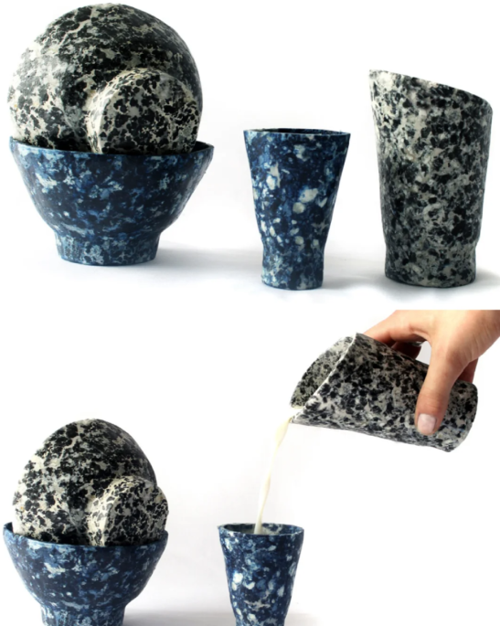
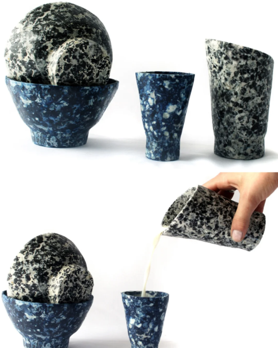
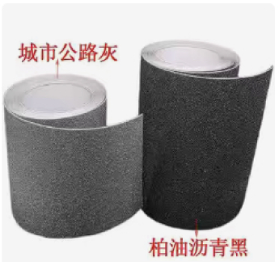
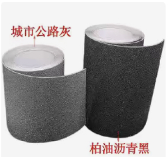
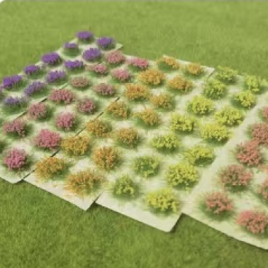
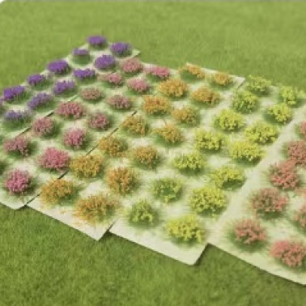
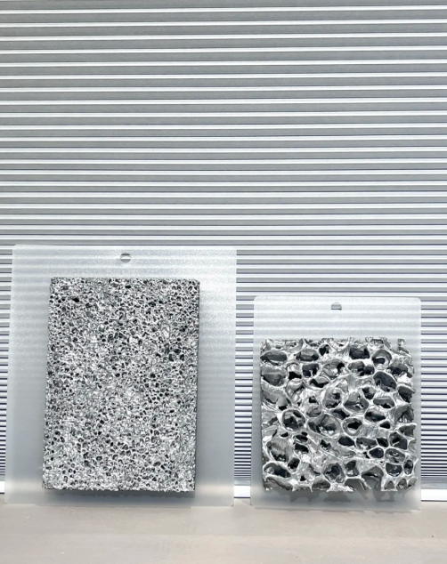
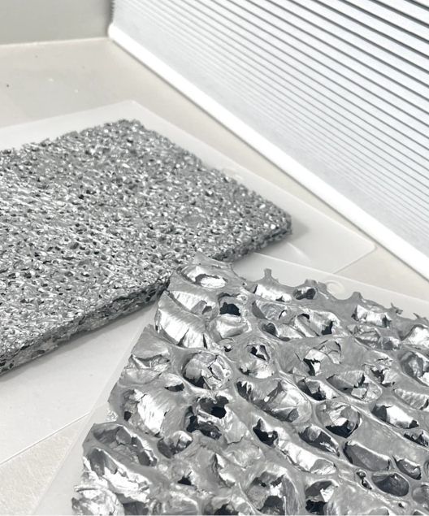
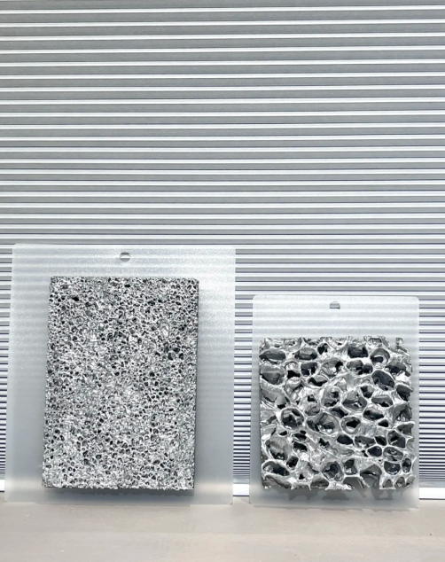
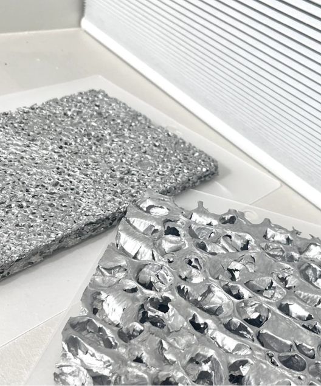

Materails
2. Introduce 2 new materials;
3. 1 methods post processing for 1 metal , 1 methods post processing for 1
plastic ,1 methods postprocessing for wood
4. Introduce detail all materails in our final project
1-1 metal--Titanium
1-2 plastic--Polyethylene
1-3 composite materials--Wood plastic composites
2-1 Milk Plastic
4-1 Acrylic (device housing)
4-2 Plastics（塑料）/plastics（塑胶）
---Miniature tree model & Miniatures of the house
4-3 Sandpaper--- miniature roads
4-4 PM OLED（Passive matrix OLED）---display screen
2-2
Aluminum Foam Sheet
3-1
Surface treatment process
3-2 Plastic disposal methods
3-3 Wood surface treatment process

Titanium, chemical symbol Ti, atomic number 22,
is recognized as a non-toxic element in the world.
This silvery-white transition metal, named after the
titan of Greek mythology, has many excellent
properties, including
low density, high strength,
corrosion resistance, excellent high and low
temperature performance, non-magnetism, and
good biocompatibility.
Titanium's high specific strength properties are
particularly outstanding.
High-strength titanium
alloys are as strong as high-strength steels, but their density is
almost half that of them.
This makes titanium a special material for NASA rockets and satellites,
and is used in major projects such as China's Yutu, J-20, and
Shandong aircraft carriers.
In the civil field, due to the natural bacteriostatic and biophilic
properties of titanium, it has become the "honorary metal
king" of the food industry. At the same time, because titanium is
friendly to human tissues and does not cause an immune response in the
human body, it is also widely used in the medical field.
Titanium and its compounds are widely used in many fields such as
chemical industry, marine engineering, metallurgy, and medical
treatment. Titanium is a strategic metal and an indispensable key
material in the modern high-tech field, so it is also known as
"space metal" and "marine metal".
a.
Polyethylene
Chemical name: polyethylene
Polyethylene is a
thermoplastic resin
prepared by polymerization of ethylene, and also includes copolymers of
ethylene and a small amount of olefins. Polyethylene is one of the five
major synthetic resins, and it is the variety with the largest
production capacity and the largest import volume of synthetic resins in
China.
b.the performance of polyethylene:
1. General performance Polyethylene is a white waxy translucent
material, odorless, tasteless, non-toxic, insoluble in general solvents
at room temperature, and has low water absorption. PE is flammable, waxy
when burned, and is accompanied by molten dripping.
2. Mechanical properties:
PE is a typically soft and tough polymer. Except for the high impact
strength, the absolute value of other mechanical properties is low in
plastic materials. With the increase of PE density, the mechanical
properties except toughness are improved. The mechanical properties of
several types of PE are shown in Table 1-1.
a.Definition：
It is a new type of composite material that has flourished at home and
abroad in recent years, which refers to the use of polyethylene,
polypropylene and polyvinyl chloride instead of the usual resin
adhesive, and then through extrusion, molding, injection molding and
other plastic processing technologies to produce plates or profiles.
b.Scope of application:
One of the most important uses of wood-plastic composites is the
application of replacing solid wood in various fields, among which the
most widely used is in building products, accounting for 75% of the
total number of wood-plastic composite products. Wood-plastic composites
are mainly used in flower boxes, tree ponds, fences, garbage cans,
stools, chair strips, signs, etc.
c.Key features:
1. Good processing performance;
2. Good strength performance;
3. It has water resistance, corrosion resistance, and long service life;
4. Excellent adjustable performance;
5. It has ultraviolet light stability and good colorability ;
6. It can turn waste into treasure and can be 100% recycled and
reproduced. It can be decomposed, will not cause "white
pollution", and is a real green and environmentally friendly
product;
7. Wide range of raw materials;
8. It can be made into any shape and size according to needs;
a.What is Milk Plastic?
Milk plastic is a natural plastic alternative that uses discarded milk
as the main ingredient. The plastic is made in a similar way to cheese,
using waste milk combined with natural plasticizers to coagulate and dry
into granular materials.
b.What are the advantages of milk plastic?
1. Sustainability: Milk plastic uses waste milk as the main raw material
to transform waste resources into useful products, helping to reduce the
environmental impact of waste and reducing dependence on finite
resources, making it more sustainable.
2. Lower carbon footprint: The process of making milk plastic reduces
CO2 emissions compared to traditional plastic manufacturing processes.
3. Biodegradability: Milk plastic is more similar to natural materials
in structure, so it can be more easily decomposed by microorganisms,
reducing pollution to the environment. In contrast, traditional
synthetic plastics typically take hundreds of years or more to degrade.
4. Diversity and plasticity: Milk plastic has similar properties to
traditional plastics, and can be made into products of various shapes
and uses through different processing methods, including containers,
tableware, household items, etc. In addition, it can also be latheized
and machined like wood, with a wider range of application prospects.
5. Reduced dependence on fossil fuels: Making milk plastic does not
require the use of fossil fuels as a feedstock, so it can reduce
dependence on finite fossil resources and reduce the damaging impact on
the environment.
c.What can milk plastic be used for?
1. Packaging industry: food packaging boxes, containers, bottles,
cosmetics packaging boxes, bottles, daily necessities packaging boxes,
bottles, etc.
2. Food service industry: disposable tableware, such as knives, forks,
spoons, chopsticks, etc. Reusable utensils such as plates, bowls, cups,
etc.
3. Household items: storage boxes, baskets, flower pots, etc. Furniture
components, such as chairs, table components.
4. Stationery: pens, pencil cases, folders, etc.
5. Industrial products: industrial containers, storage barrels, etc.
6. Arts and crafts: sculptures, ornaments, etc.
a.What is Aluminum Foam Sheet?
Aluminum foam plate is made of pure aluminum or aluminum alloy after
adding additives, through the foaming process, which has both metal and
bubble characteristics, and the surface of the aluminum plate has a
dense porous metal structure, which is the largest morphological feature
of this material. Aluminum foam board provides more choices for
architects due to its stable quality, unique appearance, strong
functionality, and wide variety of specifications, and is often used in
a large area in the interior and exterior walls of buildings, indoor
floors and other scenes, and the material is easy to process and
install.
b.What are the performance characteristics of aluminum foam sheet?
1: Noise reduction and sound insulation
Because of the special structure formed in the production process, the
foam aluminum sheet has good sound absorption performance, even in the
humid environment of the bathroom and toilet, the material still
maintains a good sound absorption and noise reduction effect, which is
more than double the noise reduction effect of other sound absorption
materials.
2: Fire and heat insulation
Aluminum metal has good flame retardant and heat resistance, and a large
area of foam aluminum panels are laid on indoor and outdoor walls,
columns and other blocks, which is equivalent to forming an efficient
fire zone in the space, especially in large private houses, exhibition
halls and other buildings, which can effectively improve the indoor and
outdoor fire coefficient.
3: Durable and corrosion-resistant
The surface of the foam aluminum board has good antioxidant properties,
such as in the bathroom, it is not easy to be eroded by moisture, not
easy to mold, not easy to dirty, and it is used indoors, does not change
color, and can be cleaned in outdoor rainy areas.
4: Good light transmittance
The multi-angle refraction of light from the various holes generated by
gas foaming in the double-sided perforated translucent plate can produce
rich and brilliant brilliance when doing light transmission
applications.
5: Good decoration
The surface of the foam aluminum plate can be sprayed with different
colors or patterns for decoration, and the coating has been sprayed and
dried for many times to form a beautiful decorative effect, which can
meet the creative and artistic treatment of the designer during the
decoration design.
6: Healthy and recyclable
The foam aluminum plate is made of aluminum alloy die-casting, and after
breaking, it can be fully recycled, which is a new type of green and
environmentally friendly high-tech product that does not cause secondary
pollution to the environment.
a.[Landfill]:
This is a traditional treatment method, but there are problems, such as the
small density and large volume of plastics, which are not easy to decompose,
resulting in difficulties in groundwater infiltration and secondary
pollution of land. In addition, landfills have limited capacity to process
waste, and plastic waste landfills lead to low resource utilization.
b.[Incineration]:
Incineration can produce heat energy, but it will produce toxic and harmful
gases, which requires advanced waste incineration equipment to ensure
effective combustion and reduce harmful gas emissions. However, the
incineration of plastic waste can cause serious pollution to the
environment, especially the emission of heavy metal compounds.
c.[Recycling]:
Recycling is an effective way to reduce environmental pollution and waste of
resources. Through processes such as sorting, washing, and granulating,
plastic waste can be reprocessed into new plastic products. This approach
helps to reduce resource consumption and environmental pollution.
d.[Pyrolysis]:
Pyrolysis is a chemical decomposition method that converts waste plastics
into high value-added energy products such as fuel oil and carbon black.
This method is suitable for plastic waste that is difficult to recycle or
pyrolyze, but requires advanced equipment and processes.
e.[Chemical]:
Treatment Chemical treatment involves the use of chemical methods to degrade
plastic waste, such as photochemical reactions under ultraviolet light. This
approach is not common in practical applications, but it has potential.
a.[Sanding]:
The process of grinding back and forth in the direction of the wood
grain is carried out on the surface of the wood with sandpaper to make
the wood surface smoother.
There are
mechanical sanding
and
manual sanding
b.[Polished]:
Remove the surface of the wood products stained by glue marks, oil
stains and other dirt, first polish them with sandpaper, and then scrub
them with cotton yarn dipped in gasoline. If the cleaning is not clean,
use a fine planer to clean the surface.
c.[Decolorization]:
The wood is bleached with oxidation-reduction chemicals.
Commonly used decolorizing agents: hydrogen peroxide, sodium
hypochlorite, sodium peroxide
d.[Stain]:Chemically or otherwise influencing the substance itself to
color it, so that the object takes on the colors that people need.
There are two types:
water dyeing
and
wine dyeing.
a.Sandpaper definition:
It is a kind of paper with abrasive particles attached to it, which is
used to level the surface of an article, or remove the attachment on the
surface; Sandpaper is divided into different specifications according to
different roughnesses to match different uses.
b.Type:
Sponge sandpaper: suitable for sanding smooth parts, all kinds of
materials are acceptable; Dry sandpaper: a variety of fineness options
are available, suitable for sanding materials such as wood or metal; Wet
sandpaper: fine texture, suitable for polishing delicate materials, with
water.
c.Sandpaper unit:
Purpose: defined as the number of abrasive particles per square inch of
area, the higher the value, the more particles and the finer the
abrasive; Woodworking grinding follows the principle of coarse to fine,
that is, from low mesh sandpaper grinding to high mesh sandpaper;
Commonly used mesh: 80, 100, 120, 150, 180, 220, 280, 320, 400, 600;
Fine grinding: 800, 1000, 1200, 1500, 2000, 2500, 3000, 5000;
PMOLED stands for Passive matrix OLED.
If you compare OLED to LCD. PMOLED is like STN LCD; Active matrix OLED;
AMOLED) is like a TFT LCD. The former is less suitable for displaying
moving images, with a relatively slow response time, making it difficult
to develop medium- and large-sized panels, but it is relatively
power-efficient. The latter is faster in response and can be developed
in various sizes of applications, up to the needs of TV panels, but it
consumes more power than passive.
The passive method has a simple structure, and the driving current
determines the gray scale, resolution and image quality performance, and
is mostly monochrome and multi-color products, and is used in
small-sized products. The production cost and technical threshold of
passive OLED are low, but the resolution cannot be improved due to the
driving mode, so the size of the application product is limited to about
5", and the product will be limited to the low-resolution and
small-size market. If you want to develop into larger-size applications,
PMOLED will have the problems of power consumption and reduced lifespan,
and it is rarely applied on the main screen.
Merit:
The process is relatively simple and the structure is simple.
Shortcoming:
In order to maintain the brightness of the entire panel, it is necessary
to increase the brightness of each pixel and increase the operating
current, which reduces the life of the OLED device. Current Drive
control is not easy.
（Plastics (塑料） we mentioned above）
a. Products that can be made of plastic（塑胶）
1. Toys: Plastic toy vehicles, toy animals, toy figures, etc. are all common
plastic products.
2. Household items: such as plastic cutlery (bowls, plates, cups), plastic
storage boxes, plastic vases, etc.
3. Electronic devices: The parts of many electronic devices are made of
plastic, such as mobile phone cases, keyboards, headphones, etc.
4. Sports products: such as plastic treadmills, plastic basketball courts,
plastic fitness paths, etc.
5. Packaging materials: Many goods use plastic packaging during
transportation and storage in order to maintain their freshness and
aesthetics.
b. the classification of plastics （塑胶）
1. Polypropylene (PP): This material is commonly used to make buckets, food
containers, pipes, etc. Because it has high heat and cold resistance, it is
ideal for making food-related containers. For example, the yogurt cups and
beverage bottles we commonly use are made of polypropylene.
2. Polyethylene (PE): This material is widely used to make films, pipes,
bags, etc. Because it has good corrosion resistance, it is often used as a
packaging material. For example, the plastic bags we use when shopping are
made of polyethylene.
3. Polystyrene (PS): This material is commonly used to make bowls, plates,
and cups, among other things. Because it has a good hardness and gloss, it
is often used to make beautiful tableware.
4. Polyvinyl chloride (PVC) :P VC is a relatively common plastic material,
which is often used to make water pipes, door and window guards,
children's toys, etc. It is also widely used in the manufacture of some
insulated electrical components.
5. Polycarbonate (PC): This material is often used to make some of the more
advanced containers, such as computer cases and coffee makers. It has great
durability and impact resistance, and is able to withstand drastic changes
in temperature.
6. Polyoxymethylene (POM): This material is often used to make some parts
with special properties, such as high-efficiency bearings and gears. It has
high hardness and good wear resistance.
a.Conceptual definition
Acrylic, also known as plexiglass, is a polymer material with good
plasticity, although the appearance is as bright and transparent as
glass, but the performance is not as fragile as glass.
On the contrary, acrylic is
durable, easy to process, and not fragile
, and can be integrated into a variety of colors to release the visual
effect of Ambilight, and can also be made into decorations and furniture
with different shapes according to different needs.
In addition, it also has a certain
flame resistance and stability
, the material is lightweight, the density is half of that of glass,
when used in the home, it can give the space a certain sense of
lightness and agility, and it will not be heavy when used.
b.Reasons for favoring
1.Wide range of applications.
Due to the superior performance of acrylic itself, in addition to being
used as a variety of interior decoration, it can also be used to create
a partial appearance of buildings, or used to make doors and windows on
vehicles.
2.Beautiful and stylish
For different home styles, acrylic furniture or decorations can find
their own home and blend in well.
And the texture of its material is as rich and varied as it is presented
itself, with mirror panels, pearlescent plates, frosted boards and other
options, and the spatial effects presented by each texture also have
their own merits.
In the process of integrating into the space, choosing a random texture
of furniture or decorations is enough to create a focal point for the
space and make the whole space look beautiful and stylish.
c.Acrylic sheets can be divided into according to
light transmittance
. 1.Transparent plates,
2.Translucent plates (including stained plates, transparent plates),
3.Color plates (including black and white and color plates)
d.Acrylic sheets can be divided into according to their
performance
Impact resistant plates, UV resistant plates, ordinary plates and
special plates such as high impact plates, flame retardant plates,
frosted plates, metal effect plates, high wear resistant plates, light
guide plates, etc.
e.Processing technology of acrylic sheet
(1) Casting molding:
Casting molding is used to form plexiglass plates, rods and other
profiles, that is, to form profiles by bulk polymerization method.
(2) Injection molding:
Injection molding uses pellets obtained by suspension polymerization,
which are molded on ordinary plunger or screw injection molding
machines.
(3) Extrusion:
Polymethyl methacrylate can also be extruded to prepare plexiglass
plates, rods, pipes, sheets, etc. with pellets produced by suspension
polymerization, which has the advantage of high production efficiency,
especially for pipes and other profiles that are difficult to
manufacture with molds when pouring method.
(4) Thermoforming:
Thermoforming is the process of making plexiglass sheets or sheets into
products of various sizes and shapes, clamping the blanks cut into the
required size on the mold frame, heating to soften them, and then
pressurizing them to make them stick to the mold profile to obtain the
same shape as the profile, and trimming the edge after cooling and
shaping to obtain the product.
(5) Engraving and cutting:
It is mainly for the hollowing and engraving of acrylic or colored
acrylic materials that have been formed. Ordinary laser engraving and
cutting machines can meet the engraving and hollowing needs of most
acrylic products
1. [Anodizing]:
Mainly the anodizing of aluminum, it is the use of electrochemical
principles to generate a layer of Al2O3 (alumina) film on the surface of
aluminum and aluminum alloys. This oxide film has special
characteristics such as protection, decoration, insulation, and wear
resistance.
Technical features:
1. Enhance strength
2. Achieve any color except white
3. Realize nickel-free sealing to meet the requirements of Europe, the
United States and other countries for nickel-free Technical difficulties
and key points for improvement: The yield level of anodic oxidation is
related to the cost of the final product, and the key to improving the
oxidation yield is the appropriate amount of oxidant, suitable
temperature and current density, which requires structural parts
manufacturers to continue to explore and seek breakthroughs in the
production process
2. [Electrophoresis]:
Used in stainless steel, aluminum alloy, etc., which can make the
product present various colors and maintain the metallic luster, while
enhancing the surface properties and having good anti-corrosion
performance
a.Merit:
1. Rich colors
2. No metal texture, can be used with sandblasting, polishing, wire
drawing, etc
3. Processing in liquid environment can realize the surface treatment of
complex structures
4. The process is mature and can be mass-produced
b.Disadvantages
: The ability to cover defects is general, and the pretreatment
requirements for electrophoresis of die castings are high.
3. [Micro-arc oxidation]:
The process of applying high voltage to the electrolyte solution
(generally a weakly alkaline solution) to generate a ceramic surface
coating, which is the result of the synergistic effect of physical
discharge and electrochemical oxidation
a.
Merit
:
1. Ceramic texture, dull appearance, no high-gloss products, delicate
feel, anti-fingerprint
2. Wide range of substrates: Al, Ti, Zn, Zr, Mg, Nb, and their alloys
3. The pretreatment is simple, the product has excellent corrosion
resistance, weather resistance, and good heat dissipation performance
b.
Disadvantages
: At present, the color is limited, only black, gray and other more
mature, bright colors are difficult to achieve at present; The cost is
mainly affected by the high power consumption, which is one of the
highest costs in surface treatment
An example of a surface treatment process: Anodizing, Electrophoresis,
Microarc oxidation,Physical vapor deposition, Electroplate, Powder coating,
Metal brushing, Sandblasting, Polished, Etching


 



 

 


 


